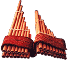
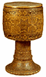
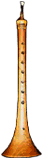

Zampoña (Siku): Традиционная флейта Анд, представляющая набор из нескольких трубок разного размера, открытых из одной стороны. Материалом служит местный бамбук Canahueca.В соответствии с размером zampona бывают трех видов: sanka (zanca), malta и ika (от большего к меньшему).
Zarb (Tombak/Tonbak):

Тип одноголового барабана в форме кубка из Персии. Изготавливается из единого скрученного куска дерева mulberry, открыт снизу, голова покрыта кожей ягненка или овцы.Исполнитель держит барабан на колене и извлекает звук ладонями или пальцами обеих рук. Tom и bak - названия двух основных ударов, первый - в центре, низкий звук, второй - по краям, высокий.

Zurna: духовой тростевой инструмент, распространенный среди народов Кавказа и в Средней Азии (где называется сурнай). Трость зурны, состоящая из двух тонких камышовых пластинок, надевается при помощи металлического кольца на деревянную трубочку, которая вставляется в корпус. Широкая круглая пластинка (костяная или металлическая), надеваемая на металлическое кольцо, служит упором для губ исполнителя. В корпусе 8-9 боковых отверстий. Практически используемый звукоряд - диатонический, в пределах 1,5 октав.Зурна считается необходимым инструментом на всех народных праздниках и в качестве аккомпанирующего «танцам живота».